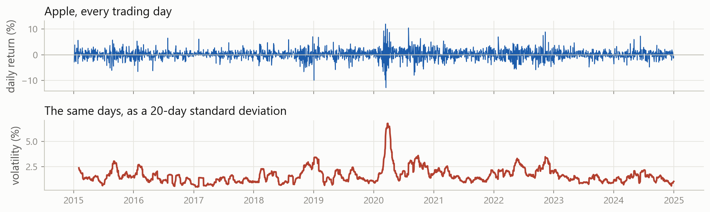
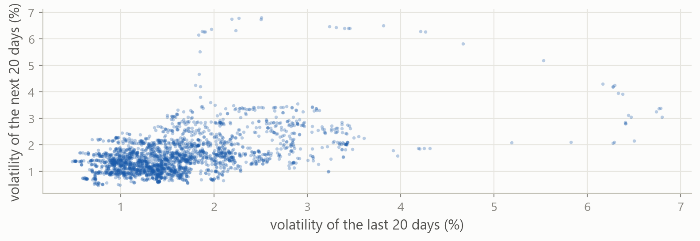
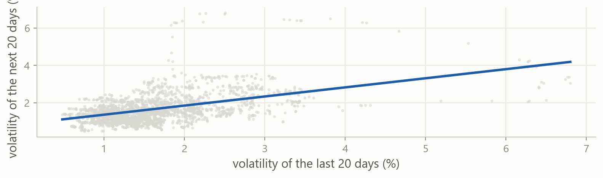
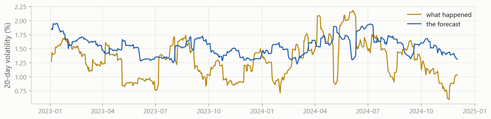
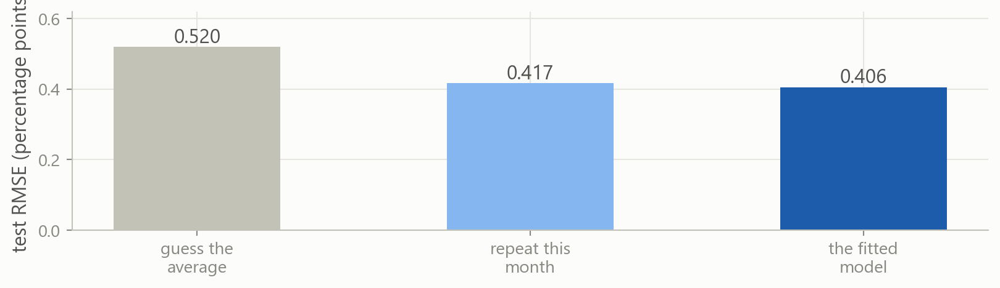
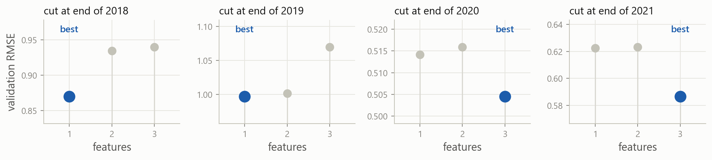
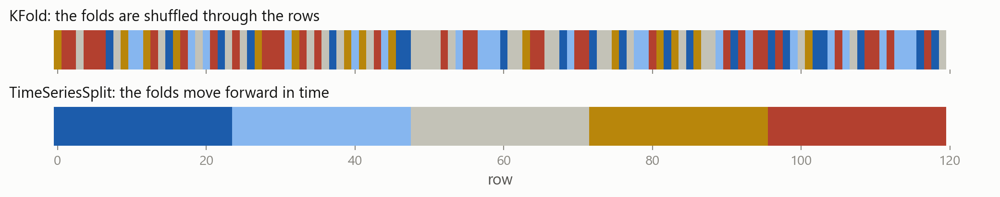
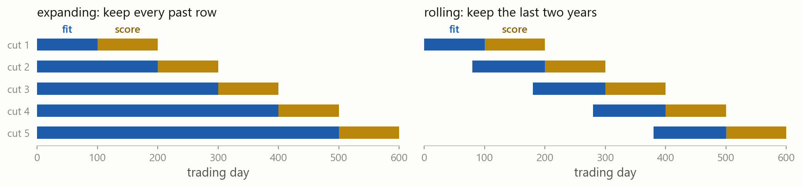

Machine Learning in Finance · Session 5
Last time you built a table like this and split it by date. This session fits a model to the training rows.

Returns are close to unpredictable. Volatility is not. It clusters: calm months are followed by calm months, so today’s volatility says something about next month’s.
The lecture introduces each of these. The exercises and the case are where you practise them.
Part 1
Setting up the prediction problem, and fitting a linear regression to it.
How volatile will Apple be over the next twenty trading days?
Why it matters option prices, margin requirements and risk limits are all set from a volatility forecast
What you know today how volatile the last twenty days were, how volatile the last sixty were, and how the stock has drifted
The answer is not known for twenty days, which makes this a forecast rather than a description.
rolling and shift were both covered last time. Multiplying by 100 converts the returns to percent, which keeps the numbers easier to read.

Each dot is one day. The cloud slopes upwards, so a volatile month tends to be followed by another one. A linear regression finds the line through it.
Split on a date, not at random. A random test day would sit between two training days with almost identical volatility, so the score would come out too good.
scikit-learn takes the features and the target as two separate objects.
Two pairs of brackets: the inner pair is a list of columns, as in prices[["date", "close"]]. One pair returns a single column, which cannot be used as X.
scikit-learn contains all sorts of models, and it is already installed in Colab.
Models linear regression today; ridge, lasso and trees later in the course
Metrics mean squared error, R², and the other scoring measures covered last time
Splitting tools for dividing the data into training, validation and test blocks
The package is installed under the name scikit-learn but imported as sklearn.
LinearRegression() creates a model that has not been fitted to anything yet. Calling .fit() with the training features and the training target computes the coefficients.
Printing the model shows only which kind of model it is. The coefficients it computed are stored on the object itself.
A trailing underscore marks an attribute computed from the data. model.coef_ does not exist until .fit() has run.
\widehat{\text{vol}}_{\text{next}} = 0.88 + 0.49 \times \text{vol}_{20d}

The slope is 0.49, not 1: only half of this month’s excess volatility carries into next month. Volatility is pulled back towards its average, which is called mean reversion.
.predict() returns one number per row of X_test. These are days in 2023 and 2024, none of which were used to fit the model.

The forecast tracks the broad moves but lags at every turn. Comparing it with anything else needs a number, not a picture.
Part 2
Measuring the error, and choosing something sensible to compare it with.
Every metric in scikit-learn takes the true values first and the predictions second.
The square root puts the error back into percentage points: the forecast is wrong by about 0.41 percentage points on a typical day.
An RMSE of 0.41 does not mean anything on its own. To judge it, compare it against two rules that are so simple they need no model.
Guess the average predict the same number every day and ignore the features entirely
Repeat what just happened predict that the next twenty days will be as volatile as the last twenty
Neither rule has parameters and neither needs fitting. Together they set the minimum that a model has to beat.
The average is computed on the training rows. Using the test average would require information that was not available when the forecast was made.
The forecast for the next twenty days is simply the last twenty, with no fitting involved. Because volatility clusters, it is already accurate.

The model wins, but only by about three percent over a rule with no parameters. Margins that small are normal in finance.
Fit the same model on vol_60d instead of vol_20d, and score it the same way. Does the longer window predict better?
.fit() takes two arguments, and the last two lines show what shape each one has.
0.419, against 0.406 for vol_20d. A sixty-day average reacts more slowly, so it lags further at the turns.
The features come from train, not test, and need the same double brackets as predict. The target is one column, so it takes a single pair.
A natural next question is whether using both features together does better than either one alone.
Part 3
Comparing several models, and deciding which one to keep.
All three use the same model, the same rows and the same target. They differ only in which columns go into X.
Naming the three lists here lets the later slides write train[A] instead of repeating the column names.
The error falls each time a column is added.
Adding a column can never worsen the fit. A useless column can be given a coefficient of zero, reproducing the previous fit exactly.
Training error therefore always favours the largest model. It measures the fit on these rows, not whether the extra columns help on new ones.
This is overfitting: a model with enough freedom fits the noise in its own training rows.
The ranking reverses. The one-feature model has the lowest test error, so the two extra columns were fitting noise rather than signal.
It is tempting. The test rows are the honest out-of-sample score, and they just gave a clear answer.
The problem is what the word lowest is doing. Three test errors were computed and the smallest was kept. Part of being smallest is being genuinely better, and part of it is luck.
The winner’s 0.406 is therefore too good. It is the best of three draws, not an unbiased estimate of what the model will do next year.
Three candidates is mild. A real project compares far more, and every comparison is another look at the test rows.
Features which columns to include, which to transform, how long a window to use
Settings every model from here has them: ridge has a shrinkage parameter, a tree has a depth
And they multiply ten settings tried on four feature sets is forty looks at the test rows
Nothing from the test rows ever entered the code. It entered through your decisions, which is the hardest kind of leakage to notice.
Comparing candidates and keeping one. This happens repeatedly, and every comparison uses up a little of the honesty of whatever rows it was done on.
Measuring how well the chosen model does on rows that played no part in the choosing. This happens once, and that number is the one reported.
Two jobs means two blocks of data. Choosing needs held-out rows of its own.
The training block is split again by date. The test block stays unused until the end.
Fit on everything to the end of 2020, then compare on 2021 and 2022. The test years remain unused.
The three-feature model wins, and the test rows played no part in it. On the test rows the ranking was the other way round.
Move the cut one year earlier. Fit on everything up to the end of 2019 and compare the candidates on 2020, 2021 and 2022.
The errors are 0.9978, 1.0025 and 1.0704. The one-feature model now has the lowest error, by a clear margin.
The three candidates and the training block are unchanged. Only the cut date moved, and a different model came out best.
Part 4
What happens when the validation block is placed somewhere else.
2021 and 2022 were chosen for convenience, not for any real reason. Moving the cut changed which model came out best.
When the cut date determines which model is kept, the result says more about the choice of cut date than about the models.

With the cut after 2018 or 2019 the one-feature model has the lowest error. With the cut after 2020 or 2021 the three-feature model does.
Each panel has its own scale, so compare the dots within a panel, not across them.
Each block is a single period 2020 contains a crash and 2021 does not, so the two periods favour different models
Each block is small a few hundred rows, and consecutive rows overlap heavily because their windows do
Validation rows are not fitted on every row held back for validation is a row the model does not learn from
The candidates differ by less than the periods do, so one cut date cannot separate them.
Since the cut dates disagree, there is no reason to trust any one of them. Use several cut dates and average the results.
Every cut is an honest measurement on its own. Averaging them stops any single period deciding the winner.
Part 5
Averaging over several cut dates, and reading the result.
Split the training rows into K blocks, called folds. Each fold is held back once, scored by a model fitted without it, and the K scores are averaged.
K measurements, not one the average of five is far steadier than any one of them, as the four cut dates already showed
Every row is scored once no row is left out of the judging, so no part of the sample is ignored
And still fitted on each row is used for fitting in the other folds, so none is permanently lost to validation
The spread comes free K numbers say how much the answer moves from period to period, which one number cannot
Write \mathcal{F}_k for the rows scored in fold k, and n_k for how many there are:
e_k = \sqrt{\frac{1}{n_k}\sum_{i \in \mathcal{F}_k}\left(y_i - \hat{y}_i\right)^2} \qquad\qquad \text{CV}_K = \frac{1}{K}\sum_{k=1}^{K} e_k
The scored block always comes after the fitted rows. Each cut is a fold, and averaging over folds is cross-validation.
.split() returns the row positions for each fold. cross_val_score runs this loop automatically, but printing it once shows what the folds actually contain.
The call fits five models and returns five scores. Each fold is scored by a model that was not fitted on it.
scikit-learn reports every score so that larger is better. Errors are flipped to negative to fit that convention.
A value of -0.583 means an RMSE of 0.583. Remove the minus sign before reporting it.
Four of the folds give similar errors and one is roughly twice as large. That fold is scored on the period containing March 2020.
Two models can share an average and differ completely: one steady across five folds, another poor in one. Report the spread as well.
The one-feature model has the lowest average error. That result is an average over five cut dates rather than a single measurement.
Build a fourth candidate that keeps vol_20d and ret_20d but drops vol_60d, and cross-validate it against the current best.
The errors are 0.7404 and 0.7477. vol_20d on its own is still better, so ret_20d was not the column holding the larger models back.
None of the four beats the simplest. Say so in the report: the extra columns were tested and did not help.
Part 6
The standard form of cross-validation, and why it does not suit this table.
KFold shuffles the rows and cuts the folds anywhere, which assumes the rows are interchangeable. That holds for a table of loan applications, or of firms.

KFold gives the lowest error to the three-feature model, which had the highest error on the test rows.
Shuffling can put Monday in the fitting rows and Tuesday in the scored rows. They share nineteen of their twenty days, so Tuesday’s score is far too good.
The last rows in a fitting block have targets that extend twenty days into the block used for scoring. The gap argument drops those rows.
The change is small because twenty rows are little against blocks of several hundred. It matters far more when the target spans a longer window.

max_train_size=500 produces the version on the right. Use a rolling window when older years have stopped being relevant, and an expanding window when they have not.
Part 7
Searching a long list of feature sets, and knowing when to stop.
These three feature sets were written by hand. With p features there are 2^p subsets: a thousand at ten features, a million at twenty.
Fitting every subset stops being possible at about twenty features. The usual answer is to walk through the subsets one feature at a time instead.
Forward selection start with nothing. Add the feature that lowers the error most, then the best of those left, and stop when it stops falling.
Backward selection start with every feature. Drop the one that costs least, and repeat. It needs more rows than features to get started.
Stepwise selection forward, but after each addition check whether an earlier feature has become redundant and can be dropped.
At ten features, forward selection fits 55 models instead of 1,024. None of the three is guaranteed to find the best subset, and all three usually get close.
Each walk still needs a rule for when to stop. AIC and BIC score a model by its fit and its size, so the two can be traded off in one number:
\text{AIC} = n\log(\text{MSE}) + 2d \qquad\qquad \text{BIC} = n\log(\text{MSE}) + d\log(n)
One fit per candidate and no folds at all, which is why they are still used. Cross-validation is slower but assumes nothing about the shape of the errors.
Cross-validation chose the one-feature model. Fit it on all the training rows, then score it once on the test rows.
The folds were only a way of estimating this number. With the choice made, the model can use every training row.
The model has the lowest error of the three, and the number can be defended: nothing in the selection used 2023 or 2024.
Fitting a model LinearRegression(), .fit(X, y), .predict(X). Later models change only the first line.
X is a table, y is a column train[["vol_20d"]] with two brackets, train["vol_next"] with one.
Always report a baseline Compare the model against the training average and against a simple rule that uses no model.
Training error always prefers more columns Adding a column can never worsen the fit, so training error cannot say whether the column helps.
Choosing uses up data Rows used to compare candidates can no longer give an honest score for the winner.
One split is one measurement Moving the cut date can change the winner. Cross-validation averages over several cuts.
Read the folds, not only the mean A fold much worse than the others points to a period the model handles badly.
Folds must follow the calendar Use TimeSeriesSplit for a time series. KFold shuffles, and here it chose the worst of the three models.
Every method later in the course has settings that have to be chosen. The procedure for choosing them is the one from this session.
Stuck? Ask a friend, ask an AI for a hint rather than an answer, or email jobo@econ.au.dk.